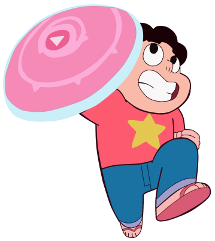

Steven
He is the son of Greg Universe, who used to be a musician, and Rose Quartz, who used to be the leader of the Crystal Gems. Rose gave up her physical form so that Steven would be born as the first Gem-human hybrid.His gemstone, embedded in his belly button, is the rose quartz he inherited from his mother, which he can use to summon her shield and form a protective bubble around himself and anyone he cares about, while being sometimes capable of using healing powers in his saliva as well. In addition to this he can also form spikes on these protective bubbles and jump much higher than he should be able too, the speed he falls is strongly connected to his emotions. He also ages related to how old he feels, has superstrength and astral projection, where he takes the bodies of others, and uses mind control. He can also, to some extent, see inside people's minds and inside fusions, as seen with his Gem friend Lapis Lazuli and The Cluster, an entity in Earth's core; as the series progressed, Steven's powers have gotten better. Like Rose, Steven is caring, protective, brave, gentle, and quick to forgive others.